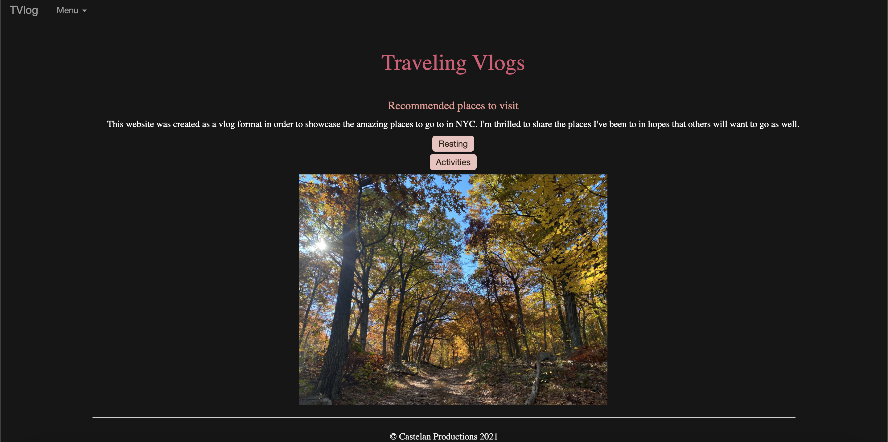
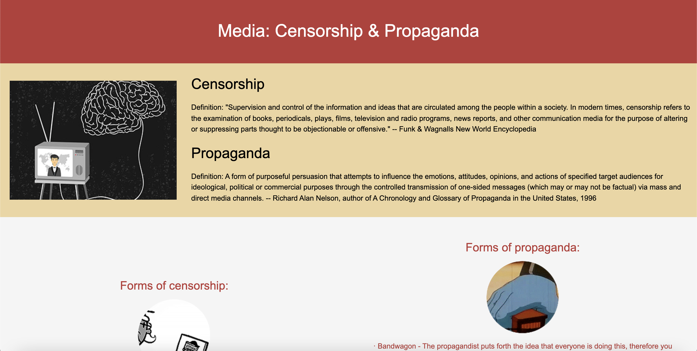
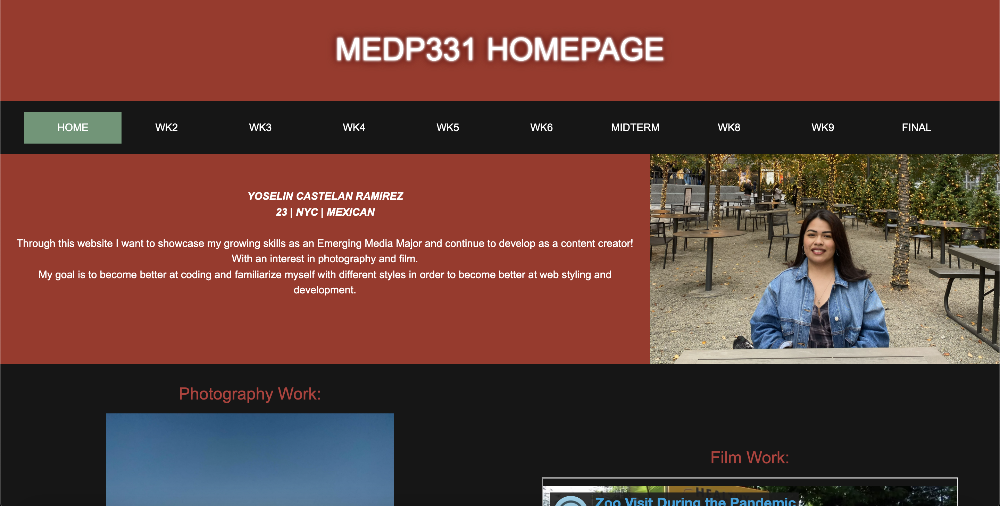

Food Blog

For my first website project, I felt inspired to make a blog cite for all the delicious food I've tasted. There's a homepage with js timed images moving, and different pages added.
For my first website project, I felt inspired to make a blog cite for all the delicious food I've tasted. There's a homepage with js timed images moving, and different pages added.

Using an API for TV search genres, I made this website as a recommendation of shows to watch based on genres and searching for your own show. I also added a night mode on the pages, and each additional page has further information on streaming services and my own personal shows to watch. Most of the code is using JavaScript and the TV Maze API to gather information.

Node.js with handlebars were used to create this simple blog website of places I recommend to visit in NYC. The videos were added with simple JS, and there are also comments and like/love functions to make it interactive.
Defining a place based on its structure and what it holds not focusing so much in the people, but the place itself. I contrasted my video from day to night to show the difference in ambiance of the park.
Filming the activity of a person. For this project I filmed my mom as she focused in making donuts. I used different shot techniques and focused more on her hand movements.
This project was part of my Documentary Film class where we filmed a community based project concerning different topics. I chose to showcase how people dealt with a normal activity, like visiting the zoo, during a pandemic.
Portrait of A Person assignment. Interviewing a person and their life's story or something personal about them. I interviewed my older sister, who's also a parent and co-owner of a company.
For my "How to do..." project, I filmed my brother building a lego set. I kept what he was builiding into a mystery until the end of the video. Using different angle shots including close ups and mid shots.
Sometimes expectations are not what reality gives you. In this single-shot video I wanted it to represent exactly how one would feel when they’re wanting (or in this case craving) something, and it turns out not how one would expect it. While my approach may seem simplistic as opposed to realistic unachievable expectations, I still believe it links the need to get something that you think is there but not.
When I think about presenting found footage that will somehow be meaningful to me, I wanted to showcase what the reality of being a woman is. While there’s a lot of women empowerment in today’s media, the reality is that a lot of women are still suffering around the world with failed humanitarian involvements. The media is quick to want to show that women have begun to fight back and get more rights, which is true somewhat but the dark contrast of that is that women still have little to no voice on many countries around the world.
As this is my last personal film project, I thought a lot of what I wanted to do, and with this experimental video I wanted to choose a topic that I would be able to have fun with. I chose to express the joy of eating bread and to simply have found footage of any commercialized bread video and people showcasing different breads all over the world.
All animation was made using Adobe After Effects.
First animation assignment, using simple movements and images to make the words stand out.
For my midterm assignment, we were tasked with presenting a small part of this poem 'Little We See' and using text animation to show our growth.
For this video animation, I used a poem from Spirited Away and through different animations made it into a story happening.
For my final project, I animated my own character, a cat named Cinnamon who only wants to sleep and eat. I used simple animaiton movements and all of the cartoon images were made in Adobe Illustrator by me.

I created a simple webpage solely for basic information on the use of propaganda and the different types there are. I also added how today's use of propaganda might appear different but is equally harmful.

My homepage for all the work I created over the semester for Web Production II. I learned how to use more intermediate levels of HTML, CSS, JS, jQuery, P5.js and Node.js
The Flower - an interactive piece of art using Jose Marti's Poem and creating dissolving squares.
The Chronicle - using sound with p5.js and showing nouns only when a certain level of hiHat is met.
Generative Art - different repetetive shapes and random colors to make dragon scales.
Text Art - bringing awareness about Mexico's femicide and honoring the vicitms.